序言
写这个电子书是因为一开始在做 KusionStack、KCLVM 项目中编译器研发的相关工作，本着学习优秀编译器的设计想法，开始学习 Rustc 的源码。这个过程中记录了一些笔记和文档，在柴大的建议下整理成文章正式发在了公众号上。没想到很受欢迎，于是决定坚持写下去。接下来会去写一些 Rustc 中的源码实现、标准库、工具，以及一些 Rust 的开源项目。
KCLVM 是我们在 Kusion 这个项目中使用 Rust 开发的语言编译器，书中的部分内容在这个项目中也有对应的应用。对云原生生态、技术感兴趣的同学可以了解下 👉 KusionStack 这个项目；对 Rust、编程语言、编译器感兴趣的同学可以看下 👉 KCLVM。
最后，这些文章中的内容大部分是我阅读源码时的一些记录和个人理解，以及 rust-dev-guide 中对应的一些描述。本人水平有限，所以可能会有一些不准确甚至错误的地方，也欢迎大家提 PR/Issue/Discussion，或者下方扫码加群讨论。如果对 Rust 源码有自己分析和见解，同样欢迎提 PR 投稿。
简介
标准库
排序算法: Timsort 和 pdqsort
前言
Rust 中排序算法的实现可以分为稳定和不稳定的两类。其中稳定的排序算法是一种受 Tim Peters 的 Timsort 算法启发的自适应、迭代归并排序；而不稳定的排序算法则是基于 Orson Peters 的 pdqsort[pattern-defeating quicksort]。本文将介绍这两个算法在 Rust 中的实现。
稳定排序： Timsort
稳定排序是指在排序过程中不改变相等的元素的顺序。 Rust 中的稳定排序的实现是一种改进的 timsort 算法。可以在 libray:alloc:src:slice.rs 中看到它的实现。
Timsort 简介
Timsort 算法由 Tim Peters 在 2002 年设计，是一种归并和插入排序的混合的排序算法。在最坏的情况，它的时间复杂度为 O(n * log(n))，需要分配排序的数组一半大小的内存空间，所以空间复杂度为 O(n)，所以在各个方面都优于O(n)空间和稳定O(n * log(n))时间的归并排序算法。由于其出色的性能，在 Python 中最先引入，作为 list.sort 的默认实现，后续 Java 也在 JDK1.7 中使用了 Timsort 算法。
Timsort 算法的基本流程是：
- 确定数组的单调上升段和严格单调下降段，并将严格下降段反转
- 定义最小片段(run)长度，低于此长度的片段通过插入排序合并到较长的段中
- 反复归并相邻片段，直到整个排序完成
因此，Timsort 基本上是一种归并排序，但是在一些小片段的合并中使用了插入排序。
算法实现
可以在 libray:alloc:src:slice.rs 中看到 Rust 中 Timsort 算法的实现。
空数组和短数组处理
首先是一些特殊情况的处理：
#![allow(unused)] fn main() { fn merge_sort<T, F>(v: &mut [T], mut is_less: F) where F: FnMut(&T, &T) -> bool, { // Slices of up to this length get sorted using insertion sort. const MAX_INSERTION: usize = 20; // Sorting has no meaningful behavior on zero-sized types. if T::IS_ZST { return; } let len = v.len(); // Short arrays get sorted in-place via insertion sort to avoid allocations. if len <= MAX_INSERTION { if len >= 2 { for i in (0..len - 1).rev() { insert_head(&mut v[i..], &mut is_less); } } return; } } }
这段非常容易理解，如果是空数组就直接返回；如果是比较短的数组（低于20），就直接用简单的插入排序。
扫描数组，确定单调片段
Timsort 算法的第一步是识别单调片段(run)：单调递增片段和严格单调递减片段，并将严格单调递减片段反转。
#![allow(unused)] fn main() { fn merge_sort<T, F>(v: &mut [T], mut is_less: F) where F: FnMut(&T, &T) -> bool, { let mut end = len; while end > 0 { let mut start = end - 1; if start > 0 { start -= 1; unsafe { if is_less(v.get_unchecked(start + 1), v.get_unchecked(start)) { while start > 0 && is_less(v.get_unchecked(start), v.get_unchecked(start - 1)) { start -= 1; } v[start..end].reverse(); } else { while start > 0 && !is_less(v.get_unchecked(start), v.get_unchecked(start - 1)) { start -= 1; } } } } ... } } }
首先从后向前遍历数组，找到单调递增或严格单调递减的段的起点，并将严格单调递减的段反转。以数组[4，5，6, 7, 3(1), 3(2), 1, 0]为例（为了简化掩饰，暂不考虑MAX_INSERTION），首先找到第一个严格单调递减段[3(2), 1, 0]，并将其反转为[0, 1, 3(2)]。
合并较短的段
在较短的数组上，插入排序的性能优于归并排序。所以 Timsort 算法的第二步是定义最短段长度，并利用插入排序合并较短的段。
#![allow(unused)] fn main() { fn merge_sort<T, F>(v: &mut [T], mut is_less: F) where F: FnMut(&T, &T) -> bool, { const MIN_RUN: usize = 10; while end > 0 { // omit step 1 while start > 0 && end - start < MIN_RUN { start -= 1; insert_head(&mut v[start..end], &mut is_less); } runs.push(Run { start, len: end - start }); } } }
上述的例子中，同样为了方便演示，假设 MIN_RUN 的值为5。则根据上述代码，使用插入排序在段中插入 7 和 3(1)，则段变为 [0, 1, 3(1), 3(2), 7]。最后将这个段入栈。
合并相邻段
#![allow(unused)] fn main() { fn merge_sort<T, F>(v: &mut [T], mut is_less: F) where F: FnMut(&T, &T) -> bool, { const MIN_RUN: usize = 10; while end > 0 { // omit step 1 and step 2 while let Some(r) = collapse(&runs) { let left = runs[r + 1]; let right = runs[r]; unsafe { merge( &mut v[left.start..right.start + right.len], left.len, buf.as_mut_ptr(), &mut is_less, ); } runs[r] = Run { start: left.start, len: left.len + right.len }; runs.remove(r + 1); } } fn collapse(runs: &[Run]) -> Option<usize> { let n = runs.len(); if n >= 2 && (runs[n - 1].start == 0 || runs[n - 2].len <= runs[n - 1].len || (n >= 3 && runs[n - 3].len <= runs[n - 2].len + runs[n - 1].len) || (n >= 4 && runs[n - 4].len <= runs[n - 3].len + runs[n - 2].len)) { if n >= 3 && runs[n - 3].len < runs[n - 1].len { Some(n - 3) } else { Some(n - 2) } } else { None } } } }
首先看 collapse 函数。这里用 collapse 判断是否有能够合并的段，如果有，则返回其下标 r，如果没有，则返回 None。具体判断的逻辑稍后说明。
步骤3中根据 collapse 函数的返回结果，使用归并排序合并 runs[r]和 runs[r + 1]，或者重复步骤 1 和步骤 2，继续在栈 runs 中构建新的段。
刚刚的例子中，栈 runs 中只有一个段 [0, 1, 3(1), 3(2), 7]，显然不能合并，因此重复步骤 1 和步骤 2，在 runs 中添加第二个段，使其变为 [[0, 1, 3(1), 3(2), 7], [4, 5, 6]](用 [] 表示一个段)。此时 collapse 会返回下标 0，然后使用归并合并 [0, 1, 3(1), 3(2), 7] 和 [4, 5, 6]。得到结果 [0, 1, 3(1), 3(2), 4, 5, 6, 7]，完成整个遍历。
与 Timsort 算法的区别
Rust 中的实现并非默认的 Timsort 的算法，这是因为 Timsort 算法存在 bug(http://envisage-project.eu/timsort-specification-and-verification/)。Rust 的实现在 collapse 这个函数做了修改。
可以比较 Java JDK1.8中对应的实现。Java的实现中只比较了栈顶3个元素，但 Rust 的现实比较了栈顶 4 个元素。
private void mergeCollapse() {
while (stackSize > 1) {
int n = stackSize - 2;
if (n > 0 && runLen[n - 1] <= runLen[n] + runLen[n + 1]) {
if (runLen[n - 1] < runLen[n + 1])
n--;
mergeAt(n);
} else if (runLen[n] <= runLen[n + 1]) {
mergeAt(n);
} else {
break; // Invariant is established
}
}
}
出于性能原因，Timsort 要维护尽可能少的 run。因此在每次新的 run 入栈时，会运行 mergeCollapse 函数合并栈顶 3 个元素,又因为每次入栈都会执行，所以栈中所有 run 的长度都满足以下两个条件：
- runLen[n - 2] > runLen[n - 1] + runLen[n]
- runLen[n - 1] > runLen[n]
如果不满足规则 1，则将 run[n - 1] 与 run[n] 和 run[n - 2] 较短的合并。例如，runs 中存在两个长度分别为 12 和 7 的 run，此时入栈一个长度为 6 的run，则合并长度为 7 和 6 两个 run，栈变为 [12, 13]。 如果不满足规则 2，则将 run[n - 1] 与 run[n] 合并。如上面的例子，继续合并 12 和 13，此时 runs 中仅剩一个长度为 25 的 run。就可以继续执行 Timsort 算法的第一步和第二步构造新的 run 或完成排序。
但问题在哪呢？考虑一个例子：
120, 80, 25, 20, 30
因为 25 < 20 + 30， 所以合并为
120, 80, 45, 30
此时， 120, 80, 45 已经不满足规则。这个bug在这里有更为详细的描述以及解决方法。
不稳定排序： pdqsort
todo
Ref
Timsort: https://github.com/python/cpython/blob/main/Objects/listsort.txt OpenJDK’s java.utils.Collection.sort() is broken: The good, the bad and the worst case: http://envisage-project.eu/timsort-specification-and-verification/ Proving that Android’s, Java’s and Python’s sorting algorithm is broken (and showing how to fix it): http://www.envisage-project.eu/proving-android-java-and-python-sorting-algorithm-is-broken-and-how-to-fix-it/ java bug track: https://bugs.openjdk.org/browse/JDK-8072909
Rust编译器
基础结构
命令行解析
词法分析
语法分析
语义分析
Lint
背景
Lint 工具
Lint 是代码静态分析工具的一种，最早是来源于 C 语言。Lint 工具通常会检查代码中潜在的问题和错误，包括（但不限于）编程风格（缩进、空行、空格）、代码质量（定义未使用的变量、文档缺失）以及错误代码（除0错误、重复定义、循环引用）等问题。通常来说，Lint 工具除了标识错误外，还会带有一定的 fix/refactor suggest 和 auto-fix 的能力。在工程中引入 Lint 工具可以有效的减少错误，提高整体的工程质量。此外，对一种编程语言来说，Lint 工具通常也是其他工具研发的前置条件，例如 IDE 插件的错误提示，CI 的 Pipeline 检测等。
Lint 与 LintPass
概念与关系
Rustc 中关于 Lint 最主要的结构有两个， Lint 和 LintPass。首先需要区分 Lint 和 LintPass 的概念。Rustc 的很多文档中都将它们统称为 Lint，这很容易造成混淆。关于这两者之间的区别，rustc-dev-guide 给出的解释是：
Lint declarations don't carry any "state" - they are merely global identifiers and descriptions of lints. We assert at runtime that they are not registered twice (by lint name). Lint passes are the meat of any lint.
从定义方面， Lint 是对所定义的 lint 检查的静态描述，例如 name, level, description, code 等属性，与检查时的状态无关，Rustc 用 Lint 的定义做唯一性的检查。而 LintPass 是 Lint 的具体实现，是在检查时调用的 check_* 方法。
在具体的代码实现方法， Lint定义为一个 Struct，所有 lint 的定义都是此类型的一个实例/对象。而 LintPass 则对应为一个 trait。trait 类似于 java/c++ 中的接口，每一个 lintpass 的定义都需要实现该接口中定义的方法。
#![allow(unused)] fn main() { /// Specification of a single lint. #[derive(Copy, Clone, Debug)] pub struct Lint { pub name: &'static str, /// Default level for the lint. pub default_level: Level, /// Description of the lint or the issue it detects. /// /// e.g., "imports that are never used" pub desc: &'static str, ... } pub trait LintPass { fn name(&self) -> &'static str; } }
需要注意的是，尽管刚刚的描述中说到trait 类似于接口而 Lint 是一个 struct，但 Lint 和 LintPass 之间并不是 OO 中一个“类”和它的“方法”的关系。而是在声明 LintPass 会生成一个实现了该 trait 的同名的 struct，该 struct 中的 get_lints() 方法会生成对应的 Lint 定义。

这与 rustc-dev-guide 的描述也保持了一致:
A lint might not have any lint pass that emits it, it could have many, or just one -- the compiler doesn't track whether a pass is in any way associated with a particular lint, and frequently lints are emitted as part of other work (e.g., type checking, etc.).
Lint 与 LintPass 的宏定义
Rustc 为 Lint 和 LintPass 都提供了用于定义其结构的宏。
定义 Lint 的宏declare_lint 比较简单，可以在rustc_lint_defs::lib.rs中找到。declare_lint 宏解析输入参数，并生成名称为 $NAME 的 Lint struct。
#![allow(unused)] fn main() { #[macro_export] macro_rules! declare_lint { ($(#[$attr:meta])* $vis: vis $NAME: ident, $Level: ident, $desc: expr) => ( $crate::declare_lint!( $(#[$attr])* $vis $NAME, $Level, $desc, ); ); ($(#[$attr:meta])* $vis: vis $NAME: ident, $Level: ident, $desc: expr, $(@feature_gate = $gate:expr;)? $(@future_incompatible = FutureIncompatibleInfo { $($field:ident : $val:expr),* $(,)* }; )? $($v:ident),*) => ( $(#[$attr])* $vis static $NAME: &$crate::Lint = &$crate::Lint { name: stringify!($NAME), default_level: $crate::$Level, desc: $desc, edition_lint_opts: None, is_plugin: false, $($v: true,)* $(feature_gate: Some($gate),)* $(future_incompatible: Some($crate::FutureIncompatibleInfo { $($field: $val,)* ..$crate::FutureIncompatibleInfo::default_fields_for_macro() }),)* ..$crate::Lint::default_fields_for_macro() }; ); ($(#[$attr:meta])* $vis: vis $NAME: ident, $Level: ident, $desc: expr, $lint_edition: expr => $edition_level: ident ) => ( $(#[$attr])* $vis static $NAME: &$crate::Lint = &$crate::Lint { name: stringify!($NAME), default_level: $crate::$Level, desc: $desc, edition_lint_opts: Some(($lint_edition, $crate::Level::$edition_level)), report_in_external_macro: false, is_plugin: false, }; ); } }
LintPass 的定义涉及到两个宏：
- declare_lint_pass：生成一个名为
$name的 struct，并且调用impl_lint_pass宏。
#![allow(unused)] fn main() { macro_rules! declare_lint_pass { ($(#[$m:meta])* $name:ident => [$($lint:expr),* $(,)?]) => { $(#[$m])* #[derive(Copy, Clone)] pub struct $name; $crate::impl_lint_pass!($name => [$($lint),*]); }; } }
- impl_lint_pass：为生成的
LintPass结构实现fn name()和fn get_lints()方法。
#![allow(unused)] fn main() { macro_rules! impl_lint_pass { ($ty:ty => [$($lint:expr),* $(,)?]) => { impl $crate::LintPass for $ty { fn name(&self) -> &'static str { stringify!($ty) } } impl $ty { pub fn get_lints() -> $crate::LintArray { $crate::lint_array!($($lint),*) } } }; } }
EarlyLintPass 与 LateLintPass
前面关于 LintPass 的宏之中，只定义了fn name()和 fn get_lints() 方法，但并没有定义用于检查的 check_* 函数。这是因为 Rustc 中将 LintPass 分为了更为具体的两类：EarlyLintPass和LateLintPass。其主要区别在于检查的元素是否带有类型信息，即在类型检查之前还是之后执行。例如， WhileTrue 检查代码中的 while true{...} 并提示用户使用 loop{...} 去代替。这项检查不需要任何的类型信息，因此被定义为一个 EarlyLint(代码中 impl EarlyLintPass for WhileTrue。
#![allow(unused)] fn main() { declare_lint! { WHILE_TRUE, Warn, "suggest using `loop { }` instead of `while true { }`" } declare_lint_pass!(WhileTrue => [WHILE_TRUE]); impl EarlyLintPass for WhileTrue { fn check_expr(&mut self, cx: &EarlyContext<'_>, e: &ast::Expr) { ... } } }
Rustc 中用了3个宏去定义 EarlyLintPass：
- early_lint_methods：early_lint_methods 中定义了
EarlyLintPass中需要实现的check_*函数，并且将这些函数以及接收的参数$args传递给下一个宏。
#![allow(unused)] fn main() { macro_rules! early_lint_methods { ($macro:path, $args:tt) => ( $macro!($args, [ fn check_param(a: &ast::Param); fn check_ident(a: &ast::Ident); fn check_crate(a: &ast::Crate); fn check_crate_post(a: &ast::Crate); ... ]); ) } }
- declare_early_lint_pass：生成trait
EarlyLintPass并调用宏expand_early_lint_pass_methods。
#![allow(unused)] fn main() { macro_rules! declare_early_lint_pass { ([], [$($methods:tt)*]) => ( pub trait EarlyLintPass: LintPass { expand_early_lint_pass_methods!(&EarlyContext<'_>, [$($methods)*]); } ) } }
- expand_early_lint_pass_methods：为
check_*方法提供默认实现，即空检查。
#![allow(unused)] fn main() { macro_rules! expand_early_lint_pass_methods { ($context:ty, [$($(#[$attr:meta])* fn $name:ident($($param:ident: $arg:ty),*);)*]) => ( $(#[inline(always)] fn $name(&mut self, _: $context, $(_: $arg),*) {})* ) } }
这样的设计好处有以下几点：
- 因为 LintPass 是一个 trait，每一个 LintPass 的定义都需要实现其内部定义的所有方法。但 early lint 和 late lint 发生在编译的不同阶段，函数入参也不一致（AST 和 HIR）。因此，LintPass 的定义只包含了
fn name()和fn get_lints()这两个通用的方法。而执行检查函数则定义在了更为具体的EarlyLintPass和LateLintPass中。 - 同样的，对于
EarlyLintPass， 每一个 lintpass 的定义都必须实现其中的所有方法。但并非每一个 lintpass 都需要检查 AST 的所有节点。expand_early_lint_pass_methods为其内部方法提供了默认实现。这样在定义具体的 lintpass 时，只需要关注和实现其相关的检查函数即可。例如，对于WhileTrue的定义，因为while true { }这样的写法只会出现在ast::Expr节点中，因此只需要实现check_expr函数即可。在其他任何节点调用WhileTrue的检查函数，如在检查 AST 上的标识符节点时，调用WhileTrue.check_ident()，则根据宏expand_early_lint_pass_methods中的定义执行一个空函数。
pass 的含义
在 Rustc 中，除了 Lint 和 LintPass 外，还有一些 *Pass 的命名，如 Mir 和 MirPass、rustc_passes 包等。编译原理龙书中对Pass有对应的解释：
1.2.8 将多个步骤组合成趟 前面关于步骤的讨论讲的是一个编译器的逻辑组织方式。在一个特定的实现中，多个步骤的活动可以被组合成一趟（pass）。每趟读入一个输入文件并产生一个输出文件。
在声明 LintPass 的宏 declare_lint_pass 中，其第二个参数为一个列表，表示一个 lintpass 可以生成多个 lint。Rustc 中还有一些 CombinedLintPass 中也是将所有 builtin 的 lint 汇总到一个 lintpass 中。这与龙书中“趟”的定义基本一致:LintPass 可以组合多个 Lint 的检查，每个 LintPass 读取一个 AST 并产生对应的结果。
Lint 的简单实现
在 LintPass 的定义中，给每一个 lintpass 的所有 check_* 方法都提供了一个默认实现。到这里为止，基本上已经可以实现 Lint 检查的功能。
#![allow(unused)] fn main() { struct Linter { } impl ast_visit::Visitor for Linter { fn visit_crate(a: ast:crate){ for lintpass in lintpasses{ lintpass.check_crate(a) } walk_crate(); } fn visit_stmt(a: ast:stmt){ for lintpass in lintpasses{ lintpass.check_stmt(a) } walk_stmt(); } ... } let linter = Linter::new(); for c in crates{ linter.visit_crate(c); } }
Visitor 是遍历 AST 的工具，在这里为 Linter 实现其中的 visit_* 方法，在遍历时调用所有 lintpass 的 check_* 函数。walk_* 会继续调用其他的 visit_* 函数，遍历其中的子节点。因此，对于每一个 crate， 只需要调用 visit_crate() 函数就可以遍历 AST 并完成检查。
CombinedLintpass
但是，Rustc 自身和 clippy 提供的 Lint 定义多达550+多个。考虑到性能因素，定义大量的 LintPass，分别注册和调用显然是不合适的。Rustc 提供了一种更优的解决方法：既然可以将多个 Lint 组织为一个 LintPass，同样也可以将多个 LintPass 组合成一个 CombinedLintPass。
Compiler lint passes are combined into one pass Within the compiler, for performance reasons, we usually do not register dozens of lint passes. Instead, we have a single lint pass of each variety (e.g., BuiltinCombinedModuleLateLintPass) which will internally call all of the individual lint passes; this is because then we get the benefits of static over dynamic dispatch for each of the (often empty) trait methods. Ideally, we'd not have to do this, since it adds to the complexity of understanding the code. However, with the current type-erased lint store approach, it is beneficial to do so for performance reasons.
BuiltinCombinedEarlyLintPass
CombinedLintPass 同样分为 early 和 late 两类。 以 builtin 的 early lint 为例，Rustc 在 rustc_lint::src::lib.rs 中为这些 lintpass 定义了一个 BuiltinCombinedEarlyLintPass 结构。
#![allow(unused)] fn main() { early_lint_passes!(declare_combined_early_pass, [BuiltinCombinedEarlyLintPass]); }
虽然这个定义看起来只有一行，但其中通过若干个宏的展开，汇总了14个 LintPass，并且每个 LintPass 提供了50多个 check_* 方法。接下来一一说明这些宏。
BuiltinCombinedEarlyLintPass 的宏定义
early_lint_passes
#![allow(unused)] fn main() { macro_rules! early_lint_passes { ($macro:path, $args:tt) => { $macro!( $args, [ UnusedParens: UnusedParens, UnusedBraces: UnusedBraces, UnusedImportBraces: UnusedImportBraces, UnsafeCode: UnsafeCode, AnonymousParameters: AnonymousParameters, EllipsisInclusiveRangePatterns: EllipsisInclusiveRangePatterns::default(), NonCamelCaseTypes: NonCamelCaseTypes, DeprecatedAttr: DeprecatedAttr::new(), WhileTrue: WhileTrue, NonAsciiIdents: NonAsciiIdents, HiddenUnicodeCodepoints: HiddenUnicodeCodepoints, IncompleteFeatures: IncompleteFeatures, RedundantSemicolons: RedundantSemicolons, UnusedDocComment: UnusedDocComment, ] ); }; } }
首先是 early_lint_passes 宏，这个宏的主要作用是定义了所有的 early lintpass。这里的 lintpass 是成对出现的，:左边为 lintpass 的 Identifier，:右边为 lintpass 的constructor。所以会出现 EllipsisInclusiveRangePatterns::default() 和 DeprecatedAttr::new()这种形式。early_lint_passes 会将定义的 early lintpass 和 第二个参数一起传递给下一个宏。
通过这个宏，之前的BuiltinCombinedEarlyLintPass的定义被展开为：
#![allow(unused)] fn main() { declare_combined_early_pass!([BuiltinCombinedEarlyLintPass], [ UnusedParens: UnusedParens, UnusedBraces: UnusedBraces, UnusedImportBraces: UnusedImportBraces, UnsafeCode: UnsafeCode, AnonymousParameters: AnonymousParameters, EllipsisInclusiveRangePatterns: EllipsisInclusiveRangePatterns::default(), NonCamelCaseTypes: NonCamelCaseTypes, DeprecatedAttr: DeprecatedAttr::new(), WhileTrue: WhileTrue, NonAsciiIdents: NonAsciiIdents, HiddenUnicodeCodepoints: HiddenUnicodeCodepoints, IncompleteFeatures: IncompleteFeatures, RedundantSemicolons: RedundantSemicolons, UnusedDocComment: UnusedDocComment, ]) }
declare_combined_early_pass
#![allow(unused)] fn main() { macro_rules! declare_combined_early_pass { ([$name:ident], $passes:tt) => ( early_lint_methods!(declare_combined_early_lint_pass, [pub $name, $passes]); ) } }
declare_combined_early_pass 宏接收 early_lint_passes宏传来的 name(BuiltinCombinedEarlyLintPass) 和 passes，并继续传递给 early_lint_methods 宏。
通过这个宏，BuiltinCombinedEarlyLintPass的定义继续展开为：
#![allow(unused)] fn main() { early_lint_methods!(declare_combined_early_lint_pass, [pub BuiltinCombinedEarlyLintPass, [ UnusedParens: UnusedParens, UnusedBraces: UnusedBraces, UnusedImportBraces: UnusedImportBraces, UnsafeCode: UnsafeCode, AnonymousParameters: AnonymousParameters, EllipsisInclusiveRangePatterns: EllipsisInclusiveRangePatterns::default(), NonCamelCaseTypes: NonCamelCaseTypes, DeprecatedAttr: DeprecatedAttr::new(), WhileTrue: WhileTrue, NonAsciiIdents: NonAsciiIdents, HiddenUnicodeCodepoints: HiddenUnicodeCodepoints, IncompleteFeatures: IncompleteFeatures, RedundantSemicolons: RedundantSemicolons, UnusedDocComment: UnusedDocComment, ] ]); }
early_lint_methods
#![allow(unused)] fn main() { macro_rules! early_lint_methods { ($macro:path, $args:tt) => ( $macro!($args, [ fn check_param(a: &ast::Param); fn check_ident(a: &ast::Ident); fn check_crate(a: &ast::Crate); fn check_crate_post(a: &ast::Crate); ... ]); ) } }
early_lint_methods 宏在前一篇文章中也介绍过，它定义了 EarlyLintPass 中需要实现的 check_*函数，并且将这些函数以及接收的参数 $args传递给下一个宏。因为 BuiltinCombinedEarlyLintPass 也是 early lint 的一种，所以同样需要实现这些函数。
通过这个宏，BuiltinCombinedEarlyLintPass的定义继续展开为：
#![allow(unused)] fn main() { declare_combined_early_lint_pass!( [pub BuiltinCombinedEarlyLintPass, [ UnusedParens: UnusedParens, UnusedBraces: UnusedBraces, UnusedImportBraces: UnusedImportBraces, UnsafeCode: UnsafeCode, AnonymousParameters: AnonymousParameters, EllipsisInclusiveRangePatterns: EllipsisInclusiveRangePatterns::default(), NonCamelCaseTypes: NonCamelCaseTypes, DeprecatedAttr: DeprecatedAttr::new(), WhileTrue: WhileTrue, NonAsciiIdents: NonAsciiIdents, HiddenUnicodeCodepoints: HiddenUnicodeCodepoints, IncompleteFeatures: IncompleteFeatures, RedundantSemicolons: RedundantSemicolons, UnusedDocComment: UnusedDocComment, ] ], [ fn check_param(a: &ast::Param); fn check_ident(a: &ast::Ident); fn check_crate(a: &ast::Crate); fn check_crate_post(a: &ast::Crate); ... ] ) }
declare_combined_early_lint_pass
#![allow(unused)] fn main() { macro_rules! declare_combined_early_lint_pass { ([$v:vis $name:ident, [$($passes:ident: $constructor:expr,)*]], $methods:tt) => ( #[allow(non_snake_case)] $v struct $name { $($passes: $passes,)* } impl $name { $v fn new() -> Self { Self { $($passes: $constructor,)* } } $v fn get_lints() -> LintArray { let mut lints = Vec::new(); $(lints.extend_from_slice(&$passes::get_lints());)* lints } } impl EarlyLintPass for $name { expand_combined_early_lint_pass_methods!([$($passes),*], $methods); } #[allow(rustc::lint_pass_impl_without_macro)] impl LintPass for $name { fn name(&self) -> &'static str { panic!() } } ) } }
declare_combined_early_lint_pass宏是生成 BuiltinCombinedEarlyLintPass 的主体。这个宏中做了以下工作：
- 生成一个名为
BuiltinCombinedEarlyLintPass的 struct，其中的属性为宏early_lint_passes提供的 lintpass 的 identifier。 - 实现
fn new()fn name()和fn get_lints()方法。其中new()调用了early_lint_passes提供的 lintpass 的 constructor。 - 调用宏
expand_combined_early_lint_pass_methods，实现自身的check_*方法。
通过这个宏，BuiltinCombinedEarlyLintPass的定义变为：
#![allow(unused)] fn main() { pub struct BuiltinCombinedEarlyLintPass { UnusedParens: UnusedParens, UnusedBraces: UnusedBraces, UnusedImportBraces: UnusedImportBraces, UnsafeCode: UnsafeCode, AnonymousParameters: AnonymousParameters, EllipsisInclusiveRangePatterns: EllipsisInclusiveRangePatterns, NonCamelCaseTypes: NonCamelCaseTypes, DeprecatedAttr: DeprecatedAttr, WhileTrue: WhileTrue, NonAsciiIdents: NonAsciiIdents, HiddenUnicodeCodepoints: HiddenUnicodeCodepoints, IncompleteFeatures: IncompleteFeatures, RedundantSemicolons: RedundantSemicolons, UnusedDocComment: UnusedDocComment, } impl BuiltinCombinedEarlyLintPass { pub fn new() -> Self { Self { UnusedParens: UnusedParens, UnusedBraces: UnusedBraces, UnusedImportBraces: UnusedImportBraces, UnsafeCode: UnsafeCode, AnonymousParameters: AnonymousParameters, EllipsisInclusiveRangePatterns: EllipsisInclusiveRangePatterns::default(), NonCamelCaseTypes: NonCamelCaseTypes, DeprecatedAttr: DeprecatedAttr::new(), WhileTrue: WhileTrue, NonAsciiIdents: NonAsciiIdents, HiddenUnicodeCodepoints: HiddenUnicodeCodepoints, IncompleteFeatures: IncompleteFeatures, RedundantSemicolons: RedundantSemicolons, UnusedDocComment: UnusedDocComment, } } pub fn get_lints() -> LintArray { let mut lints = Vec::new(); lints.extend_from_slice(&UnusedParens::get_lints()); lints.extend_from_slice(&UnusedBraces::get_lints()); lints.extend_from_slice(&UnusedImportBraces::get_lints()); lints.extend_from_slice(&UnsafeCode::get_lints()); lints.extend_from_slice(&AnonymousParameters::get_lints()); lints.extend_from_slice(&EllipsisInclusiveRangePatterns::get_lints()); lints.extend_from_slice(&NonCamelCaseTypes::get_lints()); lints.extend_from_slice(&DeprecatedAttr::get_lints()); lints.extend_from_slice(&WhileTrue::get_lints()); lints.extend_from_slice(&NonAsciiIdents::get_lints()); lints.extend_from_slice(&HiddenUnicodeCodepoints::get_lints()); lints.extend_from_slice(&IncompleteFeatures::get_lints()); lints.extend_from_slice(&RedundantSemicolons::get_lints()); lints.extend_from_slice(&UnusedDocComment::get_lints()); lints } } impl EarlyLintPass for BuiltinCombinedEarlyLintPass { expand_combined_early_lint_pass_methods!([$($passes),*], $methods); } #[allow(rustc::lint_pass_impl_without_macro)] impl LintPass for BuiltinCombinedEarlyLintPass { fn name(&self) -> &'static str { panic!() } } }
expand_combined_early_lint_pass_methods
#![allow(unused)] fn main() { macro_rules! expand_combined_early_lint_pass_methods { ($passes:tt, [$($(#[$attr:meta])* fn $name:ident($($param:ident: $arg:ty),*);)*]) => ( $(fn $name(&mut self, context: &EarlyContext<'_>, $($param: $arg),*) { expand_combined_early_lint_pass_method!($passes, self, $name, (context, $($param),*)); })* ) } }
expand_combined_early_lint_pass_methods宏在 BuiltinCombinedEarlyLintPass 中展开所有 early_lint_methods 中定义的方法。
通过这个宏，BuiltinCombinedEarlyLintPass的定义变为（省略其他定义）：
#![allow(unused)] fn main() { impl EarlyLintPass for BuiltinCombinedEarlyLintPass { fn check_param(&mut self, context: &EarlyContext<'_>, a: &ast::Param) { expand_combined_early_lint_pass_method!($passes, self, $name, (context, $($param),*)); } fn check_ident(&mut self, context: &EarlyContext<'_>, a: &ast::Ident) { expand_combined_early_lint_pass_method!($passes, self, $name, (context, $($param),*)); } fn check_crate(&mut self, context: &EarlyContext<'_>, a: &ast::Crate) { expand_combined_early_lint_pass_method!($passes, self, $name, (context, $($param),*)); } ... } }
expand_combined_early_lint_pass_method
#![allow(unused)] fn main() { macro_rules! expand_combined_early_lint_pass_method { ([$($passes:ident),*], $self: ident, $name: ident, $params:tt) => ({ $($self.$passes.$name $params;)* }) } }
expand_combined_early_lint_pass_method：在展开的check_* 函数中调用每一个 LintPass 的 check_*。
通过这个宏，BuiltinCombinedEarlyLintPass的定义变为（省略其他定义）：
#![allow(unused)] fn main() { impl EarlyLintPass for BuiltinCombinedEarlyLintPass { fn check_param(&mut self, context: &EarlyContext<'_>, a: &ast::Param) { self.UnusedParens.check_param(context, a); self.UnusedBraces.check_param(context, a); self.UnusedImportBraces.check_param(context, a); ... } fn check_ident(&mut self, context: &EarlyContext<'_>, a: &ast::Ident) { self.UnusedParens.check_ident(context, a); self.UnusedBraces.check_ident(context, a); self.UnusedImportBraces.check_ident(context, a); ... } fn check_crate(&mut self, context: &EarlyContext<'_>, a: &ast::Crate) { self.UnusedParens.check_crate(context, a); self.UnusedBraces.check_crate(context, a); self.UnusedImportBraces.check_crate(context, a); ... } ... } }
BuiltinCombinedEarlyLintPass 的最终定义
通过以上宏的展开，BuiltinCombinedEarlyLintPass的定义实际为如下形式：
#![allow(unused)] fn main() { pub struct BuiltinCombinedEarlyLintPass { UnusedParens: UnusedParens, UnusedBraces: UnusedBraces, ... } impl BuiltinCombinedEarlyLintPass{ pub fn new() -> Self { UnusedParens: UnusedParens, UnusedBraces: UnusedBraces, ... } pub fn get_lints() -> LintArray { let mut lints = Vec::new(); lints.extend_from_slice(&UnusedParens::get_lints()); lints.extend_from_slice(&UnusedBraces::get_lints()); ... lints } } impl EarlyLintPass for BuiltinCombinedEarlyLintPass { fn check_crates(&mut self, context: &EarlyContext<'_>, a: &ast::Crate){ self.UnusedParens.check_crates (context, a); self.UnusedBraces.check_crates (context, a); ... } fn check_ident(&mut self, context: &EarlyContext<'_>, a: Ident){ self.UnusedParens.check_ident (context, a); self.UnusedBraces.check_ident (context, a); ... } .. } }
通过这个定义，可以在遍历 AST 时使用 BuiltinCombinedEarlyLintPass 的 check_* 方法实现多个 lintpass 的检查。
Lint 的进一步优化
基于 CombinedLintPass ，可以对之前提出的 Linter 的设计做进一步优化。

这里，可以用 CombinedLintPass 的check_* 方法，在 Visitor 遍历 AST 时执行对应的检查。虽然效果与之前一致，但因为宏的关系，所有的 check_* 方法和需要执行的 lintpass 都被收集到了一个结构中，也更容易管理。同样的，因为 CombinedLintPass 实际上调用的是每个 lintpass 各自的 check 方法，虽然调用起来可能下图一样很复杂，但因为 lintpass 中定义的 check 方法大部分是由宏生成的空检查，所以也不会造成性能上的损失。

Lint 的执行流程
Rustc 中 Lint 的执行阶段
Rustc 的设计与经典编译器的设计基本无异，包含词法分析、语法分析、语义分析、生成IR、IR优化和代码生成等流程，但针对 Rust 的语言特性，还加入了一些特有的流程，如借用检查。对应的，代码在整个编译流程中的中间表示也有一定的扩展：
- Token stream：Lexer 将源代码的字符流转化为词法单元（token） 流，这些词法单元被传递给下一个步骤，即语法分析。
- Abstract Syntax Tree(AST)：Parser 将 Token 流转换为抽象语法树（AST），抽象语法树几乎可以完全描述源代码中所写的内容。在 AST 上，Rustc 还执行了宏扩展、 early lint 等过程。
- High-level IR(HIR)：这是一种脱糖的 AST。它仍与源代码中的内容非常接近，但它包含一些隐含的东西，例如一些省略的生命周期等。这个 IR 适合类型检查。late lint也在类型检查之后进行。
- Typed HIR(THIR)：THIR 与 HIR 类似，但它携带了类型信息，并且更加脱糖（例如，函数调用和隐式的间接引用都会变成完全显式）。
- Middle-level IR(MIR)：MIR 基本上是一个控制流图（Control-Flow Graph）。CFG 是程序执行过程的抽象表现，代表了程序执行过程中会遍历到的所有路径。它用图的形式表示一个过程内所有基本块可能流向。Rustc 在 MIR 上除了基础的基于 CFG 的静态分析和 IR 优化外，还进行了 Rust 中所有权的借用检查。
- LLVM IR：Rustc 的后端采用了 LLVM，因此，Rustc 会将 MIR 进一步转化为 LLVM IR 并传递给 LLVM 做进一步优化和代码生成的工作。
以上 Rust 代码的中间表示的转化流程也反映了 Rust 整个编译的流程，总结为一张图：
 Rustc 中的
Rustc 中的 rustc_driver::lib.rs 中控制了编译流程的各个阶段：
fn run_compiler(...) -> interface::Result<()> {
...
interface::run_compiler(config, |compiler| {
let linker = compiler.enter(|queries| {
...
queries.parse()?; // lexer parse
...
queries.expansion()?; // resolver
...
queries.prepare_outputs()?;
...
queries.global_ctxt()?; // ast -> hir
...
queries.ongoing_codegen()?;
...
}
}
前面介绍过，Rustc 中的 Lint 包含 early 和 late 两种，它们分别在 AST -> HIR 和 HIR -> THIR 两个阶段执行。这里我们同样以 WhileTrue 这个例子去看 Lint 从定义、到注册，最后执行的完整的流程。同时，WhileTrue 是 builtin 的 early lint 其中的一种，被包含在 BuiltinCombinedEarlyLintPass 之中。
定义
首先是 WhileTrue的 lint 和对应的 lintpass 的定义，它们被定义在 rustc_lint/src/builtin.rs 中
#![allow(unused)] fn main() { declare_lint! { /// The `while_true` lint detects `while true { }`. /// /// ### Example /// /// ```rust,no_run /// while true { /// /// } /// ``` /// /// {{produces}} /// /// ### Explanation /// /// `while true` should be replaced with `loop`. A `loop` expression is /// the preferred way to write an infinite loop because it more directly /// expresses the intent of the loop. WHILE_TRUE, Warn, "suggest using `loop { }` instead of `while true { }`" } declare_lint_pass!(WhileTrue => [WHILE_TRUE]); impl EarlyLintPass for WhileTrue { fn check_expr(&mut self, cx: &EarlyContext<'_>, e: &ast::Expr) { ... } } }
与前面的介绍一样：
declare_lint宏声明一个 lint：WHILE_TRUEdeclare_lint_pass宏声明一个lintpass：WhileTrue- 为
WhileTrue实现EarlyLintPass中对应的检查方法，因为此 lintpass 只检查 Expr 节点，所以只需要实现check_expr()函数即可。
注册
注册是指编译过程中将 Lint 加入到 LintStore 的过程。WhileTrue 不需要单独的注册和执行，它的检查方法通过宏扩展的方式展开到 BuiltinCombinedEarlyLintPass 中。BuiltinCombinedEarlyLintPass 的注册和执行都发生在 queries.expansion() 函数中。
#![allow(unused)] fn main() { pub fn expansion( &self, ) -> Result<&Query<(Rc<ast::Crate>, Rc<RefCell<BoxedResolver>>, Lrc<LintStore>)>> { tracing::trace!("expansion"); self.expansion.compute(|| { let crate_name = self.crate_name()?.peek().clone(); // 注册 let (krate, lint_store) = self.register_plugins()?.take(); let _timer = self.session().timer("configure_and_expand"); let sess = self.session(); let mut resolver = passes::create_resolver( sess.clone(), self.codegen_backend().metadata_loader(), &krate, &crate_name, ); let krate = resolver.access(|resolver| { // 执行 passes::configure_and_expand(sess, &lint_store, krate, &crate_name, resolver) })?; Ok((Rc::new(krate), Rc::new(RefCell::new(resolver)), lint_store)) }) } }
注册的过程会生成定义的 lint 的结构并添加到 LintStore 中。Lint 整体上被分为4个种类：pre-expansion, early, late, late-module。尽管 Lint 对应的 LintPass 在编译流程中执行的阶段不同，但注册都是发生在同一个阶段。 Lint 注册过程的函数调用链路如下：
- rustc_driver::lib::run_compiler()
- rustc_interface::queries::Queries.expansion()
- rustc_interface::queries::Queries.register_plugins()
- rustc_lint::lib::new_lint_store()
- rustc_lint::lib::register_builtins()
在这里，默认的编译流程会执行 else{} 分支中的语句，BuiltinCombinedEarlyLintPass::get_lints() 会生成 WHILE_TRUE 并添加到 LintStore中。
#![allow(unused)] fn main() { if no_interleave_lints { pre_expansion_lint_passes!(register_passes, register_pre_expansion_pass); early_lint_passes!(register_passes, register_early_pass); late_lint_passes!(register_passes, register_late_pass); late_lint_mod_passes!(register_passes, register_late_mod_pass); } else { store.register_lints(&BuiltinCombinedPreExpansionLintPass::get_lints()); store.register_lints(&BuiltinCombinedEarlyLintPass::get_lints()); store.register_lints(&BuiltinCombinedModuleLateLintPass::get_lints()); store.register_lints(&BuiltinCombinedLateLintPass::get_lints()); } }
执行
不同的 LintPass 的执行过程发生在编译过程的不同阶段，其中，BuiltinCombinedEarlyLintPass 执行过程的函数调用链路如下：
- rustc_driver::lib::run_compiler()
- rustc_interface::queries::Queries.expansion()
- rustc_interface::passes::configure_and_expand()
- rustc_lint::early::check_ast_node()
- rustc_lint::early::early_lint_node()
首先，在 configure_and_expand() 函数中，执行了 pre-expansion 和 early 两种 lintpass。注册时使用了 BuiltinCombinedEarlyLintPass::get_lints() 方法生成 lints，而这里用 BuiltinCombinedEarlyLintPass::new() 方法生成了 lintpass。
#![allow(unused)] fn main() { pub fn configure_and_expand( sess: &Session, lint_store: &LintStore, mut krate: ast::Crate, crate_name: &str, resolver: &mut Resolver<'_>, ) -> Result<ast::Crate> { pre_expansion_lint(sess, lint_store, resolver.registered_tools(), &krate, crate_name); ... sess.time("early_lint_checks", || { let lint_buffer = Some(std::mem::take(resolver.lint_buffer())); rustc_lint::check_ast_node( sess, false, lint_store, resolver.registered_tools(), lint_buffer, rustc_lint::BuiltinCombinedEarlyLintPass::new(), &krate, ) }); } }
Lint 的执行最终发生在 rustc_lint::early::early_lint_node() 函数中。比较 early_lint_node() 函数和 CombinedLintPass 一节最后的伪代码：

它们之间有以下的对应关系：
- 参数 pass 是 configure_and_expand() 函数中新建的 BuiltinCombinedEarlyLintPass，它对应 combinedlintpass。
- EarlyContextAndPass 将 pass 与 context 信息组合在一起，并且实现了 visitor，它对应 Linter。
- check_node.check(cx) 调用了 cx.pass.check_crate() 进行 lint 检查，根据 BuiltinCombinedEarlyLintPass 的定义， 这个函数中会调用所有 builtin early lint 的 check_crate() 方法，然后执行 ast_visit::walk_crate() 遍历子节点，它对应了 visit_crate()。
no_interleave_lints
虽然 Rustc 中考虑性能因素，将 LintPass 组合成 CombinedLintPass，但提供了一些编译参数去配置 Lint。其中，Lint 的注册和执行过程中都用到了 no_interleave_lints 参数。这个参数默认为 false，表示是否单独执行每一个 lint。编译时将这个修改这个参数就可以单独注册每一个 lint 以及单独执行 lintpass，这样的设计提供了更好的灵活性和自定义的能力（比如，可以对每一个 lint 单独做 benchmark）。
#![allow(unused)] fn main() { if no_interleave_lints { pre_expansion_lint_passes!(register_passes, register_pre_expansion_pass); early_lint_passes!(register_passes, register_early_pass); late_lint_passes!(register_passes, register_late_pass); late_lint_mod_passes!(register_passes, register_late_mod_pass); } else { store.register_lints(&BuiltinCombinedPreExpansionLintPass::get_lints()); store.register_lints(&BuiltinCombinedEarlyLintPass::get_lints()); store.register_lints(&BuiltinCombinedModuleLateLintPass::get_lints()); store.register_lints(&BuiltinCombinedLateLintPass::get_lints()); } }
#![allow(unused)] fn main() { pub fn check_ast_node<'a>(...) { if sess.opts.debugging_opts.no_interleave_lints { for (i, pass) in passes.iter_mut().enumerate() { buffered = sess.prof.extra_verbose_generic_activity("run_lint", pass.name()).run(|| { early_lint_node( sess, !pre_expansion && i == 0, lint_store, registered_tools, buffered, EarlyLintPassObjects { lints: slice::from_mut(pass) }, check_node, ) }); } } else { buffered = early_lint_node( sess, !pre_expansion, lint_store, registered_tools, buffered, builtin_lints, check_node, ); ... } } }
总结
至此，我们就分析了 Rustc 中一个 Lint 定义、实现对应的检查(LintPass)、注册、最终执行的完整流程。我们也可以利用这些宏，去定义新的Lint和LintPass(Clippy 中也是以相似的方式)。当然，Rustc 中关于 Lint 的部分远远不止这些，我只是分享了其中我能理解的一小部分，希望能够对大家有所帮助。
除此之外，我们在 KCLVM 这个项目中，也有对这部分内容的应用与实践，可以在这个 Issue 和 PR 看到更为详细的设计方案和具体实现，包含了visitor模式，lint、lintpass、combinedlintpass的定义，在resolver阶段调用lint检查等实现，欢迎批评指正。
代码生成
通用结构
Rust 的错误信息输出原理概述
1. 背景
最近在参与 KusionStack 内置的领域语言 —— KCL 配置语言编译器 的开发，需要开发编译器的错误处理模块，由于 KCL 使用 Rust 开发的，因此打算来学学 Rust 语言的错误处理模块是怎么做的。
2. 介绍
单纯从 Rustc 源码的目录结构中看，Rustc 中关于错误处理的部分主要集中在 rustc_errors 、rustc_error_codes 和 rustc_error_message 三个目录下，但是在看源码的过程中我发现由于 Rustc 代码量大，并且错误处理模块涉及到很多其他的模块，单纯的看这三个目录下的代码很容易看晕，剖析起来也比较困难。因此，我打算将这部分的的源码剖析拆分成几个部分，这篇文章主要结合 Rustc 的官方文档和 Rustc 源码进行结构的梳理。
因此本文的核心思路只是对错误处理部分的结构进行梳理，目标就是梳理一下在 Rustc 对 Rust 程序进行解析的过程中，错误是如何从分析过程一步一步传递到终端输出成诊断信息的。对于一些复杂且与错误诊断信息输出无关的内容，我们先暂且略过不做深究。留个坑后面再填，先把结构梳理清楚，也有助于我们后续一步一步的对源码进行更加深入清晰的剖析，防止我们在 Rustc 大量的源码中迷路。并且为了能更加清晰的看代码的结构，本文对使用的代码片段做了处理，去掉了生命周期等与代码执行逻辑无关的部分。
3. 诊断信息长啥样？
首先，看源码之前，先看看 Rust 的诊断信息的格式。如下图所示：
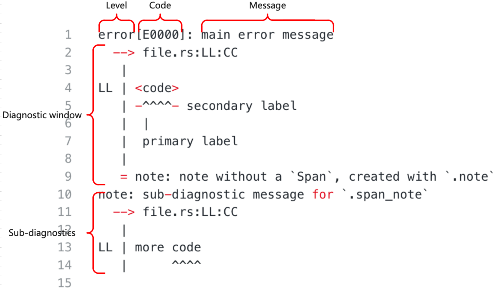
根据 Rustc 文档中的描述，上述信息可以分为下面5个部分，
-
Level 等级 (错误，警告等等)，这部分主要用来说明当前消息的严重程度。
-
Code 代码或者翻译成编号更好一些 (例如：对于“错误的类型”这种诊断信息，它对应的编号是E0308)，这个编号是一个索引，用户可以通过这个索引找到当前错误更加完整的描述信息。通过 lint 创建的诊断信息没有这个编号。
注：我后面又查了一下，rustc 官方把 Code 称作 Rust Compiler Error Index。 -
Message 消息，描述当前发生的问题的主要内容，这个消息的内容应该是通用的独立的，即使没有其他内容只看这一条信息的话，也能有所帮助。
-
Diagnostic Window 诊断窗口，主要负责展示出现问题的代码上下文相关的信息。
-
Sub-diagnostic 子诊断信息，任何错误都有很多的子诊断信息并且他们看起来都和诊断信息的主部分相似。
4. 诊断信息从哪来？
在了解了 Rustc 诊断信息之后，我们看下 Rustc 是如何构造这样的诊断信息的。在这部分 Rustc 官方提供了两种方式，
- 实现 rustc_sessions 提供的 trait。
- 用 rustc_macros 中为输出诊断信息准备的属性宏，自动实现 rustc_sessions 提供的 trait。
直接看上面这两点不太好理解，主要的流程可以参考下面这张图，
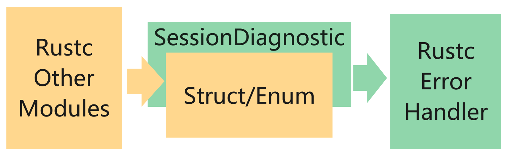
其中，黄色部分表示在 Rustc 的不同模块中，定义各自的错误/警告等异常类型的结构体 Struct (注：枚举也可以，本文是一个概述，为了方便描述所以下面就只列Struct了)。绿色部分表示在Rustc的错误处理模块提供了一个 trait SessionDiagnostic。不同模块内部定义的 Struct 实现这个 trait SessionDiagnostic。trait SessionDiagnostic 的具体实现就是将 Struct 中输出诊断信息需要的内容抽取出来封装好，返回给 Rustc 的错误处理模块用来输出。
这就是上面提到的实现错误模块提供的 trait。这个 trait SessionDiagnostic 的源码如下：
#![allow(unused)] fn main() { // rustc/compiler/rustc_session/src/session.rs pub trait SessionDiagnostic <T: EmissionGuarantee = ErrorGuaranteed> { fn into_diagnostic( self, sess: & ParseSess ) -> DiagnosticBuilder<T>; } }
以 Rustc 文档中给出的错误结构为例：
#![allow(unused)] fn main() { pub struct FieldAlreadyDeclared { pub field_name: Ident, pub span: Span, pub prev_span: Span, } }
按照 Rustc 的官方描述，要想输出 struct FieldAlreadyDeclared 对应的错误信息，就要实现 trait SessionDiagnostic。Rustc 的源码内部定义的错误结构目前完全采用第二种方式。
在 Rustc 提供的官方文档上，提供了 trait SessionDiagnostic 的具体实现。
#![allow(unused)] fn main() { impl SessionDiagnostic for FieldAlreadyDeclared { fn into_diagnostic(self, sess: Session) -> DiagnosticBuilder { let mut diag = sess.struct_err(...); diag.set_span(self.span); diag.span_label(...); ... diag } } }
上面代码展示了如何为 Struct FieldAlreadyDeclared 实现 trait SessionDiagnostic，具体的代码细节看不懂也不用急，这里只做一个展示，代码的细节不是我们本文的主题，过早的深入代码细节容易迷路，只要知道这部分代码从 Struct FieldAlreadyDeclared 抽取出了输出诊断信息需要的内容，并封装到了 DiagnosticBuilder 中返回。
那么怎么理解第二种方式呢？以上面的代码为例，实现 trait SessionDiagnostic 主要是将 Struct FieldAlreadyDeclared 中需要输出到诊断信息中的内容，抽取出来，填充到 DiagnosticBuilder 中，这个过程其实就是在搬砖，将组成诊断信息的砖块从 Struct FieldAlreadyDeclared 搬运到 DiagnosticBuilder 中，因此，这个过程可以自动化，当我们定义一个新的错误 Struct 的时候，砖块不需要我们自己搬，我们可以写一个程序帮我们搬，我们只需要在定义 Struct 的时候标注出来哪些砖需要搬就可以了。
所以，Rustc 内部通过属性宏的方式写好了搬砖的程序，这个搬砖程序为我们提供了一些注解，在定义新的错误 Struct 时，只需要通过注解标注出哪些砖要搬，Rustc 内部的属性宏就会为我们自动实现 trait SessionDiagnostic。同样是 Struct FieldAlreadyDeclared，使用第二种方式的代码如下：
#![allow(unused)] fn main() { #[derive(SessionDiagnostic)] #[diag(typeck::field_already_declared, code = "E0124")] pub struct FieldAlreadyDeclared { pub field_name: Ident, #[primary_span] #[label] pub span: Span, #[label(typeck::previous_decl_label)] pub prev_span: Span, } }
其中，通过注解 #[derive(SessionDiagnostic)] 使用 rustc_sessions 内部实现的属性宏，通过注解[diag(typeck::field_already_declared, code = "E0124")] 说明当前诊断信息输出的文本信息与前面提到的当前诊断信息的编号，最后通过注解 #[primary_span], #[label] 和 #[label(typeck::previous_decl_label)] 注解标注了出现问题的代码上下文相关的信息。
定义了带有注解的 Struct 或者为 Struct 实现了 trait SessionDiagnostic 后，接下来要做什么？Rustc 文档是这么说的。
Now that we've defined our diagnostic, how do we use it? It's quite straightforward, just create an instance of the struct and pass it to emit_err (or emit_warning).
现在，我们已经定义了我们的诊断信息，那我们如何使用它呢？这非常简单，我们只需要创建一个结构体的实例，并将它传递给 emit_err() 或者 emit_warning() 方法就可以了。
#![allow(unused)] fn main() { tcx.sess.emit_err(FieldAlreadyDeclared { field_name: f.ident, span: f.span, prev_span, }); }
不太明白，但是得到了一个关键方法 emit_err() ，通过这个方法将错误的诊断信息输出到终端，那就在源码里全局搜索一下这个方法：
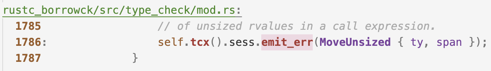
找到了这个方法的定义如下：
#![allow(unused)] fn main() { // 这个方法在 Struct Session 中。 impl Session{ pub fn emit_err( &self, err: impl SessionDiagnostic ) -> ErrorGuaranteed { self.parse_sess.emit_err(err) } } }
我们顺着方法的调用链路连续点进去看看，
#![allow(unused)] fn main() { // self.parse_sess.emit_err(err) impl ParseSess{ pub fn emit_err( &self, err: impl SessionDiagnostic ) -> ErrorGuaranteed { self.create_err(err).emit() } } // self.create_err(err) impl ParseSess{ pub fn create_err( &'a self, err: impl SessionDiagnostic, ) -> DiagnosticBuilder<ErrorGuaranteed> { err.into_diagnostic(self) } } // self.create_err(err).emit() impl DiagnosticBuilder { pub fn emit(&mut self) -> G { ...... } } }
看代码好像明白了，把上面错误处理过程的图细化一下：
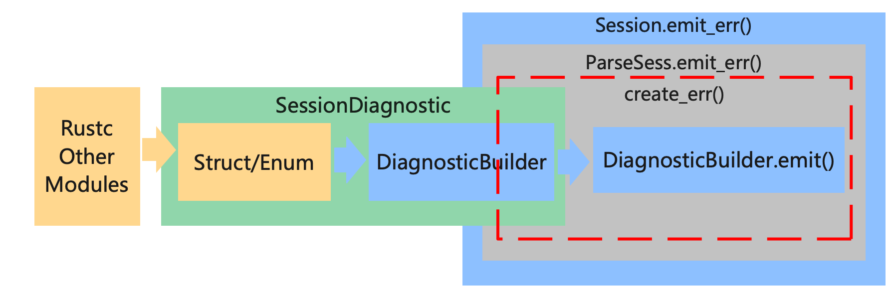
如图所示，我在图的右面增加了一些东西，黄色的部分没有太大的变化，Rustc 其他的模块定义错误的 Struct，绿色的部分增加了一些内容，细化了 trait SessionDiagnostic 的主要实现，根据黄色的 Struct 提供的内容生成蓝色的 DiagnosticBuilder。生成的 DiagnosticBuilder 中，内置 emit() 方法用来将诊断信息输出到终端，这个 emit() 方法最后会在 Session 中被调用。
在 rustc 中通过 Struct Session 调用生成的 DiagnosticBuilder 来输出诊断信息，具体的调用过程如上图右侧所示，Struct Session 内置了 Struct ParseSess ,这里包了两层 emit_err() 方法，并且在方法 ParseSess.emit_err() 中，调用了 ParseSess.create_err() 方法，这个方法接受 trait SessionDiagnostic 的实现，并调用 trait SessionDiagnostic 提供的 into_diagnostic() 方法获取 DiagnosticBuilder 实例，随后调用 DiagnosticBuilder 内置的 emit() 方法将诊断信息输出到终端。
看到这里，问题又来了，Rustc 通过 Session 接收 DiagnosticBuilder 输出诊断信息，这个 Session 是什么？这个 Session 是如何与 Rustc 其他模块联动的呢？或者说这个 Session 是怎么被调用的呢？
关于 Session 是什么，这不是本文的重点，为了防止迷路，这里先刨个坑，后续的文章中看看 Session 是什么，接下来，我们先来看看 Session 是怎么被调用来处理错误的。我们在全局搜索一下 sess.emit_err() 这个关键字，看看 rustc 是如何通过 Session 输出诊断信息的。
可以看到，在Rustc中很多地方都通过 Session 输出错误信息。
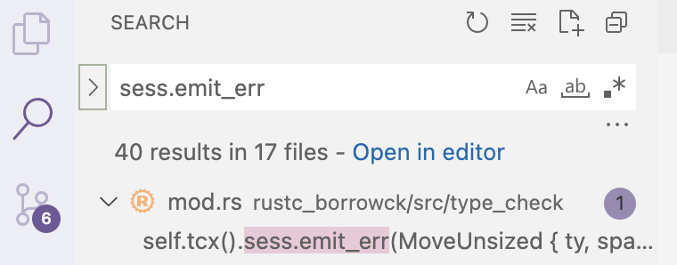
我看了一下，挑了几个其中比较典型，见名知意的地方。首先是在 Ructc 的语法解析器 rustc_parse 中，在进行语法分析的过程中遇到错误，会通过 sess.emit_err() 方法输出错误的诊断信息。
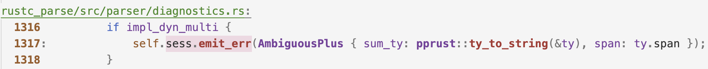
然后，在 rustc 的类型检查器 TypeChecker 中，所有权借用检查 rustc_borrowck 部分和类型检查部分 rustc_typeck 在检查到错误时会通过 sess.emit_err() 方法输出错误的诊断信息。与 rustc_parse 不同的是 TypeChecker 并不直接将 Session 实例作为结构体成员而是通过一个获取上下文的方法 tcx() 获取 Session 实例。
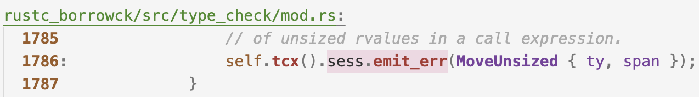 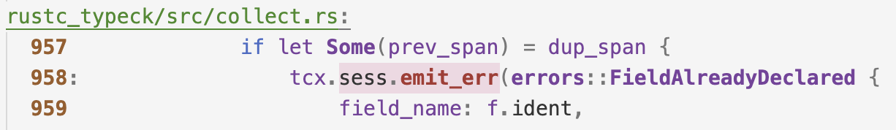
这个上下文方法 tcx() 的细节以及上下文的结构也是暂不深究，目前我们只需要知道 TypeChecker 也是通过 Session 输出诊断信息的就够了。然后，我们来浅看一下他们是如何借助 Session 输出错误的信息的。
首先，看看 rustc_parse 中关于 Session 的部分：
#![allow(unused)] fn main() { pub struct Parser { pub sess: & ParseSess, ...... } // 在 Parser 解析 Rust 语言的时候,会调用emit_err方法输出诊断信息。 self.sess.emit_err(...) }
见名知意给我带来了一点误判， Parser 内置的是 ParseSess 而不是 Session。所以，可以借助上面那个图的结构，给 Parser 错误处理的局部也单独画一张图。
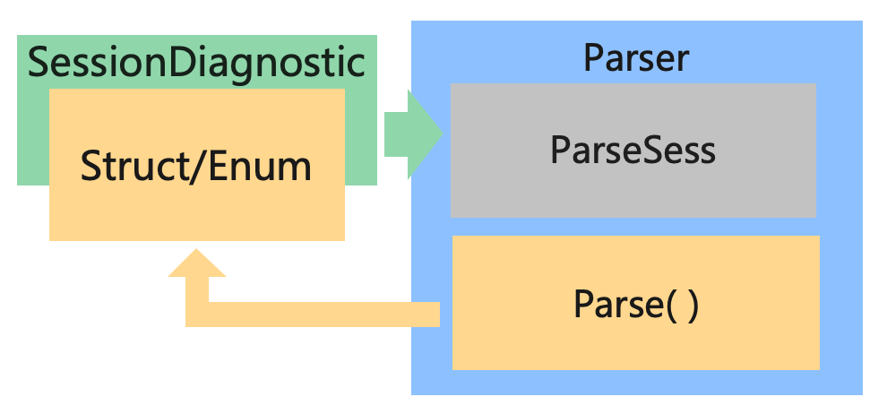
之前的图中已经展示了内部的细节，这里就不展示了，这里只展示 trait SessionDiagnostic 和 Parser 之间的关系，(注：上图中的 Parse() 方法是我起的名字，指的是 Rustc中 对 Rust 程序语法分析的过程，在 Rustc 源程序中这个方法并不一定存在，具体用的是什么方法不是本文的重点，但是只要是编译器就一定有 parse 过程，在不同的编译器中 parse 过程的名字可能不同。)
如图所示，在对 Rust 程序进行语法分析的过程中，如果出现错误，就实例化一个实现了 trait SessionDiagnostic 的错误 Struct 结构，并把它抛给 Parser 内置的 ParseSess 中的 emit_err() 方法将诊断信息输出。
然后，再看看 rustc_borrowck 和 rustc_typeck，从调用方式来看，他们不是直接内置 Session 的，他们应该是内置了一个上下文相关的结构，然后那个上下文相关的结构中包含 Session 。
#![allow(unused)] fn main() { self.tcx().sess.emit_err(MoveUnsized { ty, span }); }
点进 self 看一下，可以看到这是一个类型检查器 TypeChecker ，找到上下文结构并点进去深度优先的搜索 Session 或者 ParseSess 结构，为了防止大家看的时候迷路，搜索过程就不写了，这里直接展示搜索结果。
#![allow(unused)] fn main() { struct TypeChecker { infcx: & InferCtxt, ...... } pub struct InferCtxt { pub tcx: TyCtxt, ...... } pub struct TyCtxt { gcx: & GlobalCtxt, } pub struct GlobalCtxt { pub sess: & Session, // Session 在这里 .... } }
藏的够深的，不过好在我们还是把它挖了出来，目前聚焦于错误处理，所以暂时不用关心这些上下文结构 (XXXCtxt) 都是什么意思。
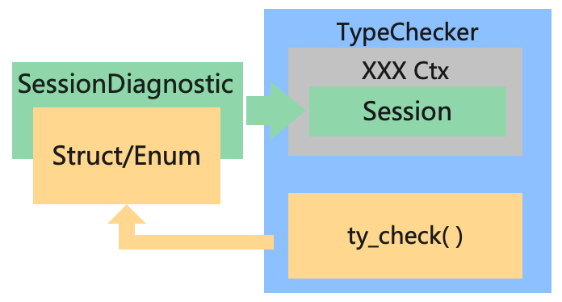
如上图所示，与 Parser 的部分同理，ty_check() 是我自己写的方法，代指 TypeChecker 对 Rust 程序进行类型检查的过程，目前聚焦于错误处理，所以 InferCtxt，TyCtxt 和 GlobalCtxt 等上下文结构我就缩写为 XXXCtx 了，可以看到，这个过程和 Parser 错误处理的过程是一样的，在类型检查的过程中出现错误，就实例化一个实现了 trait SessionDiagnostic 的结构，并把它抛给 TypeChecker 内置的各种上下文中内置的 Session 中的 emit_err() 方法将诊断信息输出。
看到这里，压力来到了 Session 和 ParseSess 这边，既然大家都把错误抛给他，那就来看看它里面干了啥。
#![allow(unused)] fn main() { pub struct Session { pub parse_sess: ParseSess, ...... } pub struct ParseSess { pub span_diagnostic: Handler, ...... } }
看不太明白，再把之前的代码拿来看看
#![allow(unused)] fn main() { // self.parse_sess.emit_err(err) impl ParseSess{ pub fn emit_err( & self, err: impl SessionDiagnostic ) -> ErrorGuaranteed { self.create_err(err).emit() } } // 这个方法是 self.create_err(err) impl ParseSess{ pub fn create_err( & self, err: impl SessionDiagnostic, ) -> DiagnosticBuilder<ErrorGuaranteed> { err.into_diagnostic(self) } } // 这个方法是 self.create_err(err).emit() impl DiagnosticBuilder { pub fn emit(&mut self) -> G { ...... /// 看来，是时候把这里省略的代码展开了... } } }
展开上述第21行的代码，看到这是一个 trait 的抽象接口：
#![allow(unused)] fn main() { impl<G: EmissionGuarantee> DiagnosticBuilder<G> { pub fn emit(&mut self) -> G { // 省略的代码 G::diagnostic_builder_emit_producing_guarantee(self) } // 省略的代码是一个trait的抽象接口。 pub trait EmissionGuarantee: Sized { fn diagnostic_builder_emit_producing_guarantee( db: &mut DiagnosticBuilder ) -> Self; ... } }
为了防止迷路，先不深究 EmissionGuarantee 是做什么的，只关注他提供的输出诊断信息到终端的功能就好了。 然后，我们在全局搜索 EmissionGuarantee，找一个 EmissionGuarantee 的实现，看看他是如何输出信息的。
#![allow(unused)] fn main() { impl EmissionGuarantee for ErrorGuaranteed { fn diagnostic_builder_emit_producing_guarantee( db: &mut DiagnosticBuilder<Self> ) -> Self { match db.inner.state { DiagnosticBuilderState::Emittable(handler) => { ... let guar = handler.emit_diagnostic(&mut db.inner.diagnostic); ... } DiagnosticBuilderState::AlreadyEmittedOrDuringCancellation => { ...... } } } } }
看到上面的代码，我觉得压力来到了 DiagnosticBuilder 这边，来都来了，得看看。
#![allow(unused)] fn main() { // match db.inner.state pub struct DiagnosticBuilder<G: EmissionGuarantee> { inner: DiagnosticBuilderInner, ... } struct DiagnosticBuilderInner { state: DiagnosticBuilderState, diagnostic: Box<Diagnostic>, } // match db.inner.state enum DiagnosticBuilderState { Emittable(& Handler), AlreadyEmittedOrDuringCancellation, } }
可以看到，最后是通过 DiagnosticBuilderState 中的 Handler 输出得诊断信息。
#![allow(unused)] fn main() { /// A handler deals with errors and other compiler output. /// Certain errors (fatal, bug, unimpl) may cause immediate exit, /// others log errors for later reporting. pub struct Handler { flags: HandlerFlags, inner: Lock<HandlerInner>, } }
到 Handler 这里，看看注释，我觉得可以了，我们知道了所有错误的诊断信息，最后都通过 Handler 输出到终端，到这里，可以再把上面的图细化一下：
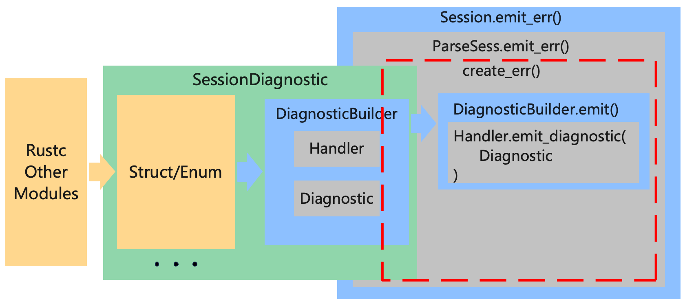
如图所示，我们在图中将 DiagnosticBuilder 内部的一点点细节画进去了，先不考虑 EmissionGuarantee。 DiagnosticBuilder 中包含输出诊断信息的 Handler 和保存诊断信息内容的 Diagnostic ，在 Session 和 ParseSess 中，会先调用 SessionDiagnostic 的 into_diagnostic() 方法，获得 DiagnosticBuilder，然后调用 DiagnoaticBuilder 的 emit() 方法输出诊断信息，在 emit() 方法中，会调用 DiagnoaticBuilder 内置的 Handler 并将 DiagnoaticBuilder 中的 Diagnostic 输出到终端。
总结
在本文中我们只涉猎了 Rustc 中错误处理模块很小的一部分，通过这一部分的浅看，我们大概的了解了一下 Rustc 中错误从出现到变成诊断信息输出到终端的整个流程。最后以上文中提到的 rustc_parser 和 rustc_type_checker 为例，一张图收尾。
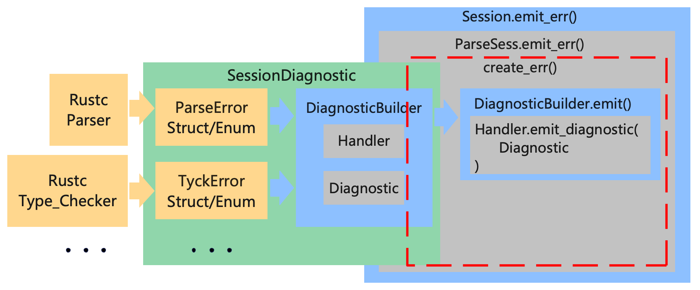
Rustc 错误处理模块的三部分:
- 编译器的各个部分自定义错误的结构，保存错误信息。
- SessionDiagnostic 负责将各部分自定义错误的结构转换为 DiagnosticBuilder。
- Session/ParseSess 负责调用 SessionDiagnostic 提供的接口获得 DiagnosticBuilder ，并调用 DiagnosticBuilder 内置的方法输出诊断信息。
如果还是有一点绕晕了，在上面这个图上再加一笔，通过红色的尖头我们可以看到 Rust 中的一个异常包含的信息的从发生错误的地方到开发者面前的主要流向：
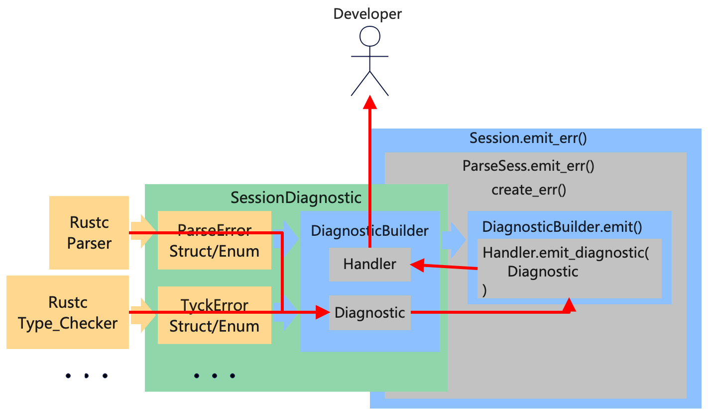
从上图右面的部分可以看到，错误信息并不是直接从 DiagnosticBuilder 中发送到开发者面前的，而是先从 Session 兜了个圈子，那为什么要这么做呢？这里先刨个坑，后续我们将进一步深入到 Rustc 的源码当中去，详细剖析解读一下各部分的源码结构并且理解一下 Rustc 的开发者增加各个部分的动机。
本期挖坑
- Session 和 ParseSess 到底是什么 ？
- 为什么搜索 emit_err() 没有涉及到词法分析 Lexer 和代码生成 CodeGen 的部分，这两个部分的错误是怎么处理的 ？
- EmissionGuarantee 这个结构在错误处理的过程中是做什么的 ？
参考
- KusionStack: https://github.com/KusionStack/kusion
- KCL 配置语言编译器: https://github.com/KusionStack/KCLVM
- Rustc 官方文档: https://rustc-dev-guide.rust-lang.org/
- Rustc 源码: https://github.com/rust-lang/rust
- Rust Compiler Error Index: https://doc.rust-lang.org/error-index.html
SourceMap & Span
Rust外围工具
Rust开源项目
KCLVM
KCLVM（Kusion Configuration Language Virtual Machine）是云原生可编程技术栈 Kusion 的核心组成部分，是 KCL 配置语言编译器前后端实现的统称，用于编译 KCL 配置文件并产生相应的 YAML/JSON 配置。此外 KCL 是一种专用于配置定义、校验的动态强类型配置语言，重点服务于云原生基础设施配置和策略定义场景，即基础设施代码化 IaC（Infrastructure as Code）和策略代码化 PaC（Policy as Code）。
介绍
Kusion 配置语言（KCL）是一个开源的基于约束的记录及函数语言。KCL 通过成熟的编程语言理论和实践来改进对大量繁杂的配置数据和逻辑的编写，通过声明式的语法结合静态类型等技术特性来简化和校验配置的开发和运维工作。
特性
- 设计优良：独立设计的语法、语义、运行时和系统库，提供配置（config）、类型（schema）、函数（lambda）、规则（rule）等核心语言元素
- 建模能力：以 Schema 为中心的建模抽象
- 使用简单：语言自身覆盖大多数配置和策略功能
- 可靠：静态类型系统和自定义 Rule 规则约束
- 可扩展：配置分块定义能力及丰富的配置合并覆盖能力
- 自动化能力：丰富的语言级 CRUD API 和多语言 API
- 高性能：语言编译器本身采用 Rust & C 实现，配合 LLVM 优化器，支持编译到本地代码和 WASM 等格式并高效执行
- 云原生亲和：原生支持 OpenAPI 和 Kubernetes CRD Specs 到 KCL 的转换，支持 Kubernetes YAML 规范
- 开发友好：丰富的语言工具 (Lint，Test，Vet，Doc 等)、 IDE 插件和语言插件
场景
您可以将 KCL 用于
- 生成低级配置数据如 JSON, YAML 等
- 使用 schema 对配置数据进行建模并减少配置数据中的样板文件
- 为配置数据定义带有规则约束的 schema 并对数据进行自动验证
- 分块编写配置数据并使用不同的策略合并数据
- 无副作用地组织、简化、统一和管理庞大的配置
- 与 Kusion Stack 一起，定义您的应用交付运维生态
安装
从 Github releases 页面下载，并且将 {install-location}/kclvm/bin 添加到您的环境变量中
快速开始
./samples/fib.k 是一个计算斐波那契数列的例子
schema Fib:
n1: int = n - 1
n2: int = n1 - 1
n: int
value: int
if n <= 1:
value = 1
elif n == 2:
value = 1
else:
value = Fib {n: n1}.value + Fib {n: n2}.value
fib8 = Fib {n: 8}.value
我们可以通过执行如下命令得到 YAML 输出
kcl ./samples/fib.k
YAML 输出
fib8: 21
文档
更多文档请访问 https://kusionstack.io
贡献
参考开发手册.
路线规划
许可
Apache License Version 2.0